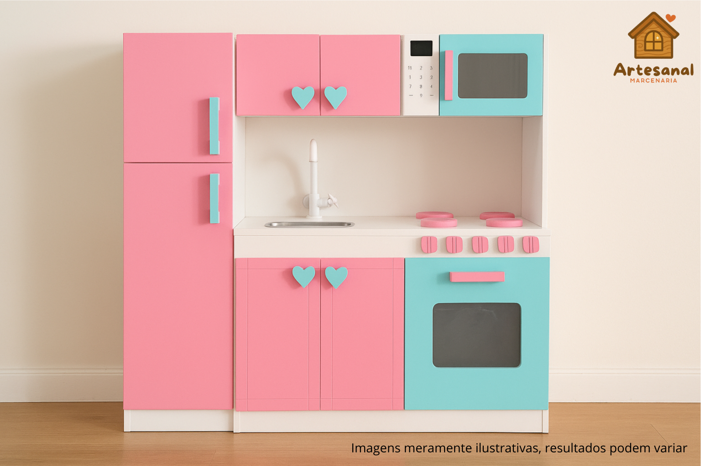
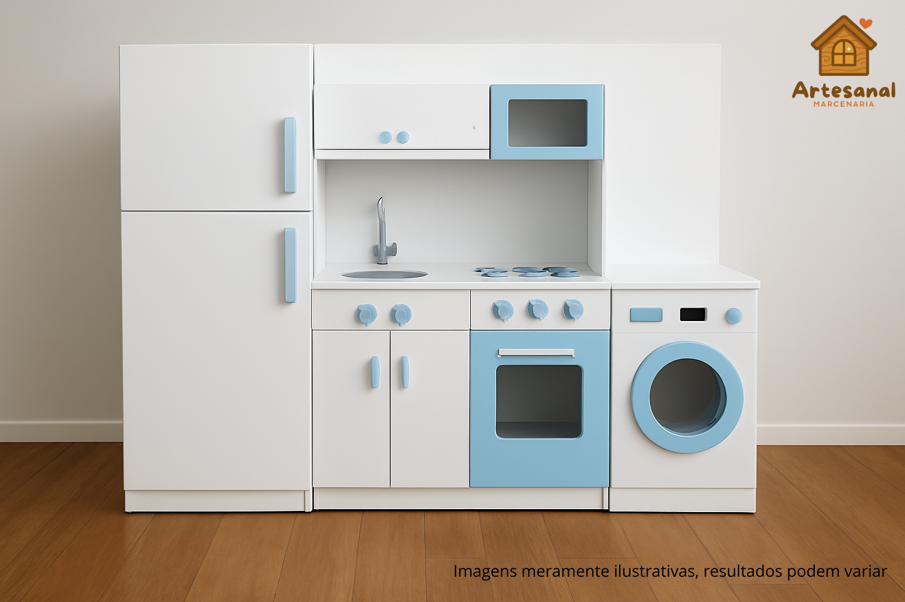

Nossos Pequenos Tesouros
Clique e confira nosso trabalho

Cozinha dos Sonhos – Feita em madeira de demolição, com detalhes que encantam e inspiram brincadeiras.

Penteadeira dos Sonhos – Espelho antigo, gavetas para segredos e acabamento suave como abraço de mãe.

Cozinha Aurora – Para pequenos chefs criarem memórias deliciosas.

Oficina das ideias – Ferramentas detalhadas e madeira polida à mão.